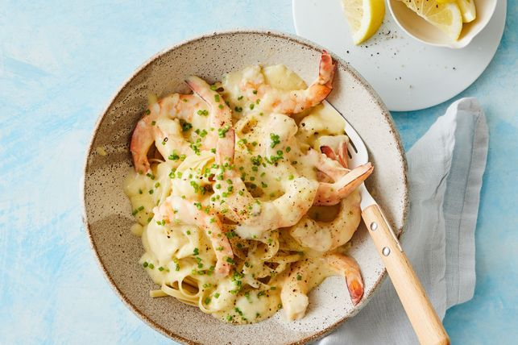

Index Page
Lemon Butter Prawns

Description:
Ready in 15 minutes, this creamy dinner winner will be a new family favourite.
Ingreidents
- 25g butter
- 1 tbsp extra virgin olive oil
- 1 garlic clove, crushed
- 1 cup chicken or fish stock
- 1/2 cup (125ml) Bulla Cooking Cream
- Juice of 1 lemon
- Finely grated rind of 1 lemon
- 1 tsp Dijon mustard
- green prawns, peeled (tails intact), deveined
- Chopped fresh chives, to serve
- Cooked linguine, to serve
Steps
- Heat butter, oil and garlic in a medium frying pan over a medium-high heat until butter has melted. Add flour and cook for 1 minute, stirring, until mixture bubbles.
- Pour in stock, stirring constantly to prevent lumps forming. Add cooking cream and lemon juice and rind. Cook, stirring, for 3 minutes or until sauce boils and thickens. Add mustard. Season with salt and pepper.
- Add prawns. Simmer, stirring, for 3 minutes or until prawns are cooked through. Sprinkle with chives and serve over pasta.
- Serve and enjoy!
Find original recipe below:
Lemon Butter Prawns